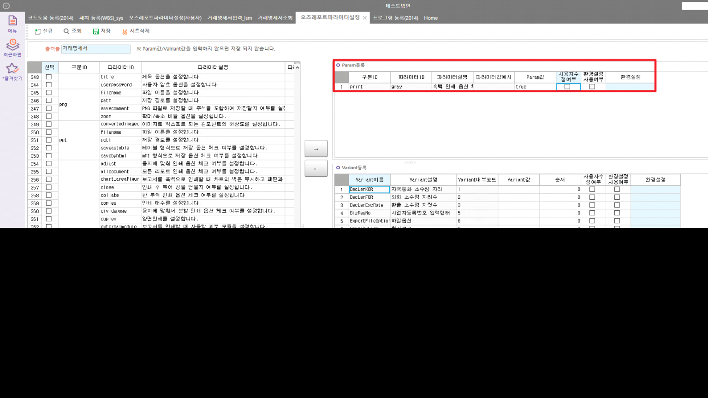

흑백 인쇄 옵션 체크
Param값 => true (1넣으면 안됨)
SELECT * FROM _TCAOZParamItem WHERE DtlRemark LIKE '%흑백%'
SELECT * FROM _TCAOZParam WHERE OZPSeq = 31
SELECT * FROM _TCAOZReport ORDER BY LastDateTime DESC

Param값 => true (1넣으면 안됨)
SELECT * FROM _TCAOZParamItem WHERE DtlRemark LIKE '%흑백%'
SELECT * FROM _TCAOZParam WHERE OZPSeq = 31
SELECT * FROM _TCAOZReport ORDER BY LastDateTime DESC
